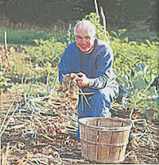
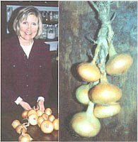
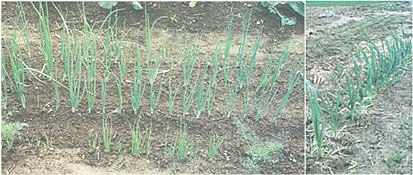
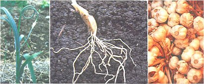
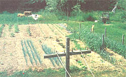
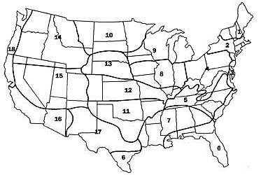

GARDEN & YARD
Planting, harvesting, storing, and loving onions, shallots, leeks, and garlic.
Did you know that onions are an aphrodisiac? That they decrease the likelihood of heart attack and stroke? That they reduce cancer risk? You are probably unaware that it is illegal for barbers in a certain Pennsylvania town to eat onions between the hours of 7 A.M. and 7 P.M., or that ancient Egyptians placed their right hand on an onion to take an oath. Have you ever used an onion to revive someone from a faint or to relieve nasal congestion? How about rubbing a cut onion on your windshield to prevent frost? Or rubbing gold with an onion to clean it? Have you ever eaten an onion?
The last, of course, was a silly question. Even people who don't think they like onions probably eat them regularly. I can't imagine cooking without onions. When I prepare a meal, there always seems to be an appropriate place for an onion. Even a grilled cheese sandwich is enhanced, for my palate, with some onion shavings cooked inside. As a lazy gardener interested in eating as much food from my own garden as possible, onions are the perfect vegetable: they are easy to plant, easy to grow, easy to store, and easy to cook.
There is only one feature about growing onions that must be kept in mind: the length of day. They grow in two phases. The production of leaves is the first phase; this starts when the plant starts growing, when the temperature is warm enough for plants that wintered in the ground or for those recently planted. It ends when the bulb starts to form, which is dependent on the length of day. The size of the bulb depends on the number and size of the leaves at the time it starts to bulb. Each leaf represents a layer of the onion and the thickness of each layer is relative to the size of the leaf. We don't want the day-length to trigger the plant to bulb until there are many leaves of good size. In the northern latitudes of the United States, day length on June 21 reaches about fifteen hours. In Portland, Maine, our days are longer than fifteen hours from May 24 to July 15. In Vedalia, Georgia, the longest day is about fourteen hours. If we planted Vedalia onions in Maine, they would barely get started in the spring before the day length triggered them to bulb.
How do we know which varieties to buy? Some catalogs will indicate latitudes for different varieties. You can probably count on sets purchased locally. The only way you are really likely to get into trouble is if you buy seeds from a catalog company that is at a substantially different latitude than you are.
I just mentioned sets, which are the easiest method of growing onions. These are small onions that were started from seed, bulbed slightly, then pulled and dried. A pound will plant about fifty feet of row. When my garden soil has been tilled, making the soil light and airy, I grasp a set by the top, push the root-end into the soil about three inches, then on to the next. I space them about four inches apart in rows eight inches apart. When I hand dig the area, I make a three-inch-deep furrow, push the sets into the bottom of the furrow, pull the soil back over them, and tamp it down with the back of the hoe.
Since onions are very hardy, this can and should be done as soon as the ground can be worked in the spring. That will give the plant the maximum amount of time to grow before it turns to the job of making a bulb. Don't worry about optimum timing. Peas and spinach need to be planted before the onions, but you shouldn't get too anxious about all this. It might take some of the fun out of gardening. I have planted onion sets as late as June and been pleased with my harvest. Trying for optimum timing just seems too much like work to me.
If you used a manure, seaweed, or compost spread in the spring for fertilizer, probably nothing more is needed. If you are working with high humus and low fertility, relying on soil microorganisms, the onions will benefit from a little soluble nitrogen in the form of blood meal, alfalfa meal, or the like. Onions will suffer from shade; they should not be planted close to corn. Weeds should be controlled. The first element of weed control is to rake the soil at the time of planting to kill any weeds that may have sprouted since the time the ground was turned and planted. Mulching between the rows with grass clippings is my favorite weed control for onions, because it also assures a steady supply of moisture to the roots. I like to put about three inches of green grass clippings between the rows within a couple of weeks of planting. If I am going to mulch before the plants emerge, I have to make it clear where the rows are. Placing handfuls of clippings between the rows, I allow some of the clippings to fall over the planted row. The onion shoots will push through a light mulch without any problem since they are coming from bulbs.
Cultivation is pretty straightforward also, either with a light hoe - there is a hoe called an onion hoe - or with a wheel hoe. Cultivate every ten days and do a little hand-weeding for those that escape efforts to destroy them. Try not to let any weeds get too big, as pulling them will damage the shallow onion roots.
You can harvest onions at any time. Just pull a few and chop the tops into a soup or eat the bottoms as scallions. These may be a bit more pungent than scallions planted from a scallion seed but are still good. When the outdoor grill is going and the onions have bulbed, pull some and stick them on the grill. The tops can be left hanging over the side of the grill to use as handles. Even if they get burned on the outside, inside there will be something that a vegetable lover will find as sweet as a marshmallow. With the grill uncovered, the onions will cook more uniformly if wrapped in foil. The real harvest is so wonderfully easy, I can't contain myself. The day length that caused them to bulb also causes them to go dormant. At the appropriate time, the tops will die down and flop over. Some people will tell you to knock over the tops that don't fall over on their own. You can if you like. I don't. It smacks of work to me. Sometime between the time the tops fall over and the first hard frost, I pull them all and drop them right there in the row. I leave them there for at least two days and maybe a month depending again on frost and what I feel like doing. I don't want them to freeze, though they can actually stand a little freeze, as long as you don't mess with them while they are in a frosty state.
While they are lying in the row, they may be cleaned by a rain. They will certainly begin the curing process, and the tops that weren't already brown will begin to dry up. When I am ready to take them out of the garden, I put them into baskets and put them on the porch. They don't stay in the baskets for long. Sometimes I dump them out on the porch right away and spread them out a little. The only thing to be concerned with here is tops that are not yet dry; they have the potential to support mold or other spoiling organisms. The reason for knocking the tops down earlier is to avoid having green tops after harvest. It's your choice. But either way you go, you don't want any moisture in the midst of stored onions that isn't encased in the onion's protective wrapping.
The specimens with thick necks are put aside for onion soup. Some of the most beautiful ones with tops suitable for braiding are set aside for that purpose. Handling during this process generally rubs off most of the soil that may have clung to the onions, as well as some of the loose wrapping and tops. One of the twenty-five or fifty-pound bags is set on the floor in a cold corner of the kitchen. The other is set on the floor in an unheated room.
Onions are biennials, which means it takes them two years to produce seeds. It is easy to see how some of them planted from sets can get confused. While I have never tested this theory I suspect that the larger sets are the ones that go to seed. The seed stalk probably does take some of the energy from the bulb, but the real problem is that it doesn't tighten up as well as the others, so it won't store as long. The easiest solution I have found is to not try to store them at all. The most beautiful onions are braided around a piece of twine. If you have read that onions should be stored at 30°F and 70% relative humidity, you may wonder at the advisability of hanging them in the hottest place of a room that gets the widest fluctuations of humidity. Sure they sprout sooner, but they look cool and we will use them within two or three months.
The same storage variety of onions can be planted from seeds. Everything is the same except the seeds are planted a quarter of an inch deep. They come up smaller and more slowly. They will have to be thinned to four inches apart. They will make better scallions and provide them for a longer time than the sets. Depending on the length of the growing season, fertility, growing conditions, and variety, onions planted from seed may not get as large. There will be no large necks. Onions planted from seed are said to store longer than those planted from sets. That sounds reasonable. However, I have never had storage onions go bad on me. They start to sprout in the spring about the same time I am planting the next crop. I always figured they were just responding to longer days and that if I stored them in a dark, cold place like the books say I should, they would probably last a few more months. But what the heck, I've got fresh green chives coming in at this time; the next crop is in the ground; and I can still eat the onions in the bottom of the bag - they're just not as crisp and pungent.
That's the around-the-year story of the common storage onion. Insects and disease, you ask? I can't help you there, as I have had neither. If you do, have your soil tested, increase the humus in your soil by adding organic matter, and be sure not to plant onions in the same soil more than once every three years. I don't know of any animals that eat onions except us.
Onions transplant easily; we can start seedlings indoors for any variety that needs at least thirteen hours of daylight to bulb. They should be started about eight weeks before transplanting. The tops may be clipped to five inches at that point.
I will put any onion on my hamburger, but a thick slab of sweet onion is surely the best. I can't think of sweet onions without remembering the best onion rings I ever had. You may find it hard to believe, but these were served on a Coast Guard cutter.
The Coast Guard is small, has a limited number of ships, and has perhaps an excessive number of four-stripe captains. They occasionally have a very senior captain on a small ship because he needs some sea duty. These Captains have certain privileges: they can have someone transferred. In this case, my ship got a captain who had a favorite chef. He made the best onion rings ever. I think we had onion rings once a week for the eighteen months that the captain was with us. Fortunately, our cruises were only a month at a time, because the sweet onions needed for this delicacy do not store well.
Other members of the onion family - the proper Latin family name is Allium - are also wonderful friends of a chef. When I was a bachelor, I found cooking a meal for a date was not only cheap but made a great impression. Instead of putting raw onions in the salad, I rubbed the wooden salad bowl with a clove of garlic before tossing. I also had a garlic press which I used to squeeze garlic juice into melted butter. I spread the garlic butter between the slices of French or Italian bread and heated it inside a paper bag in the oven.
The main course might have been stir-fry with scallions, omelet with shallots, or spaghetti with onions in a red sauce. Chives might have been sprinkled over any of them. The only member of the family that was ignored was leeks. I never cooked with leeks nor have I ever grown them because, I suppose, they were not grown or eaten at home when I was growing up. I'm trying to remedy that this year; the leek seedlings are up and growing and I'm anticipating vichyssoise in the fall.
Leeks are like fat scallions. They don't bulb. I think one of the reasons I have ignored them, other than not having a childhood memory of them, is that blanching them in the garden - so they have more white than they would otherwise - sounds like work. The instructions for growing leeks say plant in the garden, and when a certain size, transplant into a trench, then fill in the trench as they grow so they will develop a longer white portion. I like the method described in Johnny's Selected Seed catalog. "Sow in flats in February or March, a quarter-inch apart, a quarter-inch deep. Transplant to cell-type containers when large enough to handle. Keep well fertilized. Large transplants will grow the best leeks! In spring, when eight to eighteen inches tall, transplant outdoors, six inches apart, in rows twenty-four inches apart, by dropping plants in holes dibbled about six inches deep. Only an inch or two of leaves need extend above the soil surface. Do not firm soil; allow irrigation or rain to fill in the dibble hole. When using the dibble method, hilling is reduced or eliminated." This all sounds good to me.
We have a beautiful clump of chives growing in a flower bed near the kitchen door. Chives can be planted from seed or bulb (clump, actually). If you know someone who has a perennial garden with some herbs, visit them in the spring. If you spot the chives in their garden, remark, "Oh, those chives are lovely. I've always wanted to grow chives. Are they difficult?" Chances are, they will grab a trowel and dig up a clump for you right on the spot. Take the clump home and plant it in your herb or flower bed fairly close to the kitchen door. If you don't have any such bed, start one by digging up a little bit of lawn and planting the chives. Try to avoid mowing them, though even if you do, they will probably survive. You might want to cultivate around them but they will survive even if you let the grass grow right up to them. They are survivors. We have several clumps that were transplanted fifteen or so years ago as part of our market-garden expansion. They still come up every year, even though they have not been tended all those years. They are not expanding, though - given a break - they might.
Before I get too carried away with my casual approach, let me repeat one basic truth. All plants need to eat; they need nutrients. The Allium family is no exception. When you put in the clump of chives, you would do well to mix some nice compost into the soil. Give it plenty of water when you plant it, and keep the soil moist until the plant looks healthy. Since you have damaged the root system, it would be a good idea to cut back the leaf surface. Since cutting back the leaf surface is what you do when you harvest chives, you are in great shape. You can have a harvest on the very first day you plant this crop.
We harvest with a pair of scissors. Just grab as many leaves as are needed and snip off. Back in the kitchen, the scissors snip the chives into confetti over whatever dish they are adding flavor and color to.
When your clump has expanded to an attractive and healthy-looking size, you may want to dig part of it for an in-house pot. That way you can snip fresh chives all winter long as well. The outdoor plants will keep coming back every year without much attention.
Shallots were not part of my growing-up diet either, but working in and around some fine restaurants over the years, I have learned that really fine chefs can wax rhapsodic over their subtle flavor. They are similar in appearance and texture to garlic but much less pungent. They are sometimes described as being between onion and garlic. They can be planted as seeds or sets at the same time as onions. Since they are smaller, they can be planted closer together. They are harvested similarly too.
Garlic is held in the highest respect for its pungency. Barbara's interest in garlic has been growing in recent years. It's a good thing; I like it. Sometimes I will come across a pocket of garlic in a salad that gives a real zing to the tongue. It is amazing that something so hot and pungent becomes a sweet, mild spread for crackers when you bake it.
Barbara plants individual garlic cloves, root end down, about two inches deep and four inches apart, in the fall after the first killing frost. Garlic is very hardy. The roots will begin to grow but not the tops. After the ground freezes the first time, she covers the bed with mulch so alternate freezing and thawing doesn't cause the cloves to heave, which breaks the roots. In spring, the mulch is removed. She plants stiffneck garlic. Softneck garlic is the most pungent. The third of the three types is elephant, which is the largest, as the name implies, and the mildest. When the stiffneck plants put up a seed stalk, it should be snipped off. This seed stem is called a scape. It is easy to spot as it forms a beautiful curl. It is harvested much the same as onions, though if it does not come out of the soil easily, it should be dug up. What about the claim that onions have aphrodisiac properties? "During Pharaonic times, celibate Egyptian priests were prohibited from eating onions because of the potential effects. Later on, in France, newlyweds were served onion soup on the morning after their wedding night to restore their libido." We found this information, and more like it, on the Web at http://www.santesson.com/aphrodis/onion2.htm.
Even though the onion has figured prominently as an aphrodisiac through much of history, it has not been scientifically proven to be one. Research into the health benefits of onions has come up with some very interesting results, however.
Studies performed at Anderson Hospital in Houston found that mice developed 75% fewer tumors when given diallyl sulfide, a component of garlic, prior to exposure to a colon-specific carcinogen. When the study was repeated - this time using a carcinogen that affects the esophagus - the results were even more dramatic.
Dr. Michael Wargovich, who performed the studies, said, "We were shocked at the end of that experiment. Even though the garlic-treated animals were exposed to one of the most potent carcinogens around, not one got cancer. We believe diallyl sulfide triggers the liver to detoxify carcinogens. This is no longer health food stuff. At our hospital, two cancer research sections - gastrointestinal and head and neck - have committed themselves to garlic chemopreventive studies. We realize that this presents a roadblock to a lot of tumors, and many specialists in early cancers now consider this the way to go. It's really exciting."
Similar studies by Pennsylvania State University, American Health Foundation in Valhalla, NY, Lee Wattenberg and George Barany at the University of Minnesota, and Sidney Belman at New York University Medical Center, which found that garlic-derived sulfur compounds inhibited tumors of the stomach and skin, are supportive of Dr. Wargovich's findings. Questionnaires handed out in Linqu, China, compared the dietary habits of 685 patients with stomach cancer and 1,131 other people matched by age, sex, occupation, and education, who had no diagnosed cancer. People in the control, or cancer-free, group consumed from twenty-five to more than fifty pounds of Allium vegetables a year. The cancer patients ate less than twenty-five pounds of the vegetable.
Ajoene, one of thirty compounds and elements in garlic which influence body function, was reported by George Barany, chemist at the University of Minnesota, to be as potent as aspirin in preventing sticky red blood platelets from clumping together. Related factors lengthen clotting time while others dissolve clots. These three effects can all have an impact on heart attack and stroke prevention.
Garlic is a veritable pharmacopeia. That's why garlic has been found in every medical book of every culture. A huge database exists documenting its health benefits, ranging from cardiovascular effects to cancer inhibition, from the slowing down of aging to the detoxification of heavy metals and other poisonous substances.
In a study in India, 432 coronary patients who had already suffered one heart attack were randomly divided into two groups. One group received daily supplements of garlic juice in milk. The group receiving the garlic had fewer additional heart attacks, lower blood pressure, and lower serum cholesterol levels. After three years, nearly twice as many patients had died in the group not taking garlic. Subjective benefits, such as increase in energy, improvements in exercise tolerance, and a decrease in joint pains, were also reported. So was an increase in sexual desire.
Here are some fun and informative sites on the net: (These pages link to an excellent array of other pages.)
http://www.garlicpage.com/health.html http://www.santesson.com/aphrodis/onion2.htm http://essentialgarden.com/faq/garlic/ http://aggie-horticulture.tamu.edu/plantanswers/publications/onions/onions.html
Insect emergence-times are
approximately the same within
each of these eighteen zones,
although emergence times will vary
with the altitude. Find your region
and then consult the
accompanying charts.
|
 PHOTO: WALTER CHOROSZEWSKI that's me harvesting onions, long before the rest of the vegetables have come up. |
 Barbara braids |
 (LEFT) Onions planted from seed in the foreground compared to those planted at the same time, but from sets, in the background. (RIGHT) This garlic is off to a good start early in the spring because it was planted the fall before. Note that most of the garden hasn't even been planted yet, save some spinach on the background. |
|
 Left: garlic budding. The stem seeds are producing those beautiful curls, but they need to be cut off at this stage. Center: garlic roots. Right: the rich harvest. |
 Our onion patch as viewed from the second floor. It will keep us in onions for more than a whole season. |
 |
|
|
|
|